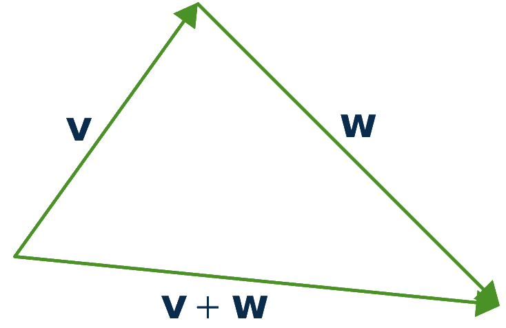
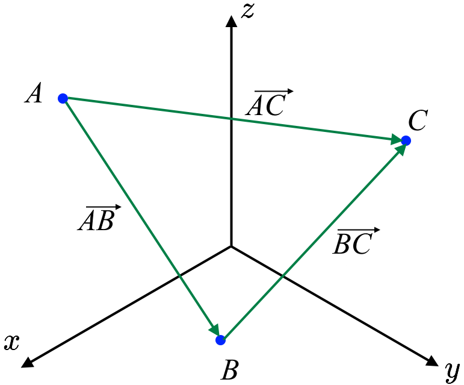
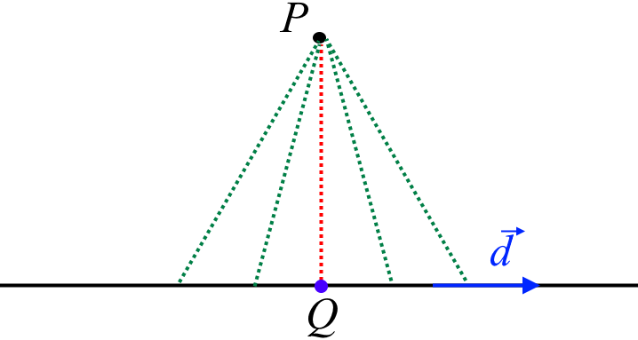

The Matrix of a Linear Transformation¶
If \(T\) is any linear transformation which maps \(\mathbb{R}^n\) to \(\mathbb{R}^m\), there is \textbf{always} an \(m\times n\) matrix \(A\) with the property that
Let \(T :~\mathbb{R}^n \to \mathbb{R}^m\) be a linear transformation. Then we can find a matrix \(A\) such that \(T(\vec{x}) = A \vec{x}\). In this case, we say that \(T\) is determined or induced by the matrix \(A\).
Let \(T :~\mathbb{R}^n \to \mathbb{R}^m\) be a linear transformation and we want to identify the matrix defined by this linear transformation \(T(\vec{x}) = A \vec{x}\). Note that for any \(\vec{x}\in \mathbb{R}^n\),
where where \(\vec{e}_i\) is the \(i^{\text{th}}\) column of \(I_n\). Then, since \(T\) is linear,
Example: Let \(T\) be a linear transformation defined by \(T:~\mathbb{R}^3 \to \mathbb{R}^4\) is defined by
Find \(A\) so that \(T(\vec{x}) = A\vec{x}\).
Solution: First, let’s find \(T\left(\vec{e}_1\right)\), \(T\left(\vec{e}_2\right)\) and \(T\left(\vec{e}_3\right)\).
Moreover, we can find matrix \(A\) as follows
A transformation \(T :~\mathbb{R}^n \to \mathbb{R}^m\) is a linear transformation if and only if it is a matrix transformation.
Example: Find \(\vec{u} \bullet \vec{v}\) if \(\vec{u} =\begin{bmatrix} 3 & 13 & 3 \end{bmatrix}^T\) and \(\vec{v} =\begin{bmatrix} 17 & 0 & -1 \end{bmatrix}^T\). \(\vec{d} =\begin{bmatrix} 2 & 2 & 1 \end{bmatrix}^T\).
Solution: \(\vec{u} \bullet \vec{v}= \begin{bmatrix} 3 \\ 13 \\ 3 \end{bmatrix} \bullet \begin{bmatrix} 17 \\ 0 \\ -1 \end{bmatrix}=(3)(17)+(13)(0)+(3)(-1)=48.\)
Let \(k\) and \(p\) denote scalars and \(\vec{u}\), \(\vec{v}\), \(\vec{w}\) denote vectors. Then the dot product \(\vec{u} \bullet \vec{v}\) satisfies the following properties.
\(\vec{u} \bullet \vec{v}= \vec{v} \bullet \vec{u}\),
\(\vec{u} \bullet \vec{u} \geq 0\),
\(\vec{u} \bullet \vec{u}=0\) if and only if \(\vec{u} = \vec{0}\),
\((k\vec{u}+ p\vec{v}) \bullet \vec{w} = k(\vec{u}\bullet \vec{w})+ p(\vec{v}\bullet \vec{w})\),
\(\vec{u}\bullet (k\vec{v}+ p \vec{w}) = k(\vec{u}\bullet \vec{v})+ p(\vec{u}\bullet \vec{w})\),
\(\|\vec{u}\|^2=\vec{u} \bullet \vec{u}\).
From the above Theorem, \(\|\vec{u}\|^2=\vec{u} \bullet \vec{u}\). Therefore, the length of vector \(\vec{u}\) can also be found using \[\|\vec{u}\|=\sqrt{\vec{u} \bullet \vec{u}}.\]
For \(\vec{v}\), \(\vec{w} \in \mathbb{R}^n\) \[\|\vec{v}+\vec{w}\| \leq \|\vec{v}\|+\|\vec{w}\|\]
{kind=link}
and equality holds if and only if one of the vectors is a non-negative scalar multiple of the other. Also \[\|\|\vec{v}\|-\|\vec{w}\|\| \leq \|\vec{v}-\vec{w}\|\]
The Included Angle: Given two vectors \(\vec{u}\) and \(\vec{v}\), the included angle is the angle between these two vectors which is given by \(\theta\) such that \(0 \leq \theta \leq \pi\).
Let \(\vec{u}\) and \(\vec{v}\) be two vectors in \(\mathbb{R}^n\) , and let \(\theta\) be the included angle. Then the following equation holds, \[\begin{aligned} \vec{u} \bullet \vec{v}=\|\vec{u}\| \|\vec{v}\|\cos(\theta).\end{aligned}\]
Example: Find the angle between \(\vec{u}=\begin{bmatrix}1 \\ 0\end{bmatrix}\) and \(\vec{v}=\begin{bmatrix}1 \\ 1\end{bmatrix}\).
Solution: From the above theorem,
Therefore, \(\theta=\pi/4\).
Let \(\vec{u}\) and \(\vec{v}\) be nonzero vectors in \(\mathbb{R}^n\). Then, \(\vec{u}\) and \(\vec{v}\) are said to be perpendicular exactly when \[\vec{u} \bullet \vec{v}=0.\]
Example: Consider the triangle \(ABC\) with vertices \(A=(1,1,-1)\), \(B=(2,3,0)\) and \linebreak \(C=(1,0,3)\). Is \(ABC\) a right triangle?
Solution:
{kind=link}
First, let’s evaluate \(\overrightarrow{AB}\), \(\overrightarrow{AC}\) and \(\overrightarrow{BC}\).
\(\overrightarrow{AB}\) and \(\overrightarrow{AC}\) are perpendicular if \(\overrightarrow{AB}\bullet\overrightarrow{AC}=0\). Thus, to have \(\overset{\triangle}{ABC}\) as a right triangle, we need to have one of the following dot products zero. However,
Therefore,
Therefore, \(\overset{\triangle}{ABC}\) is not a right triangle.
Example: Find the shortest distance from \(P=(3,2,-1)\) to the line
Moreover, find the point \(Q\) on \(L\) that is closest to \(P\).
Solution:
{kind=link}
The shortest distance from a point \(P\) to a line \(L\) always makes a right angle. Here, we have \(\vec{d}=\begin{bmatrix}2&-1&-2\end{bmatrix}^T\) and \(P=(3,2,-1)\). We need to find the point \(Q\) on \(L\) that is closest to \(P\). We do not know the point \(Q\); however, we know that \(Q\) is on \(L\). Therefore,
As a result,
Since \(\overrightarrow{PQ}\) and \(\vec{d}\) are perpendicular (the angle between \(\overrightarrow{PQ}\) and \(\vec{d}\) is the right angle),
It follows that,
Hence, \(t_0=1\). As a result,
and
Check https://www.geogebra.org/3d/ewdr2y6z for the graph.
Refrences¶
Kuttler, Kenneth. “A First Course in Linear Algebra (Lyryx).” (2018).
Nicholson, W. Keith. “Linear Algebra with Applications (Lyryx).” (2018).